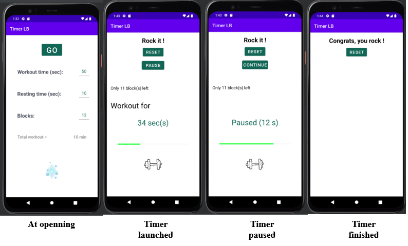

TimerLB
I recently got my hands dirty with Kotlin and scripted my first Android application. "Timer LB" is a simple but useful interval training timer for Android.

How to dowload the app :
1. Download the APK file of the TimerLB app : Click here to download the last version and tap the Download button.
2. You need to allow your webbrowser (Chrome, Firefox, etc...) to install unknown apps by going to Settings > Apps > Menu > Special access > Install unknown apps.
3. Download the APK file and open it to install it.
4. That's it !